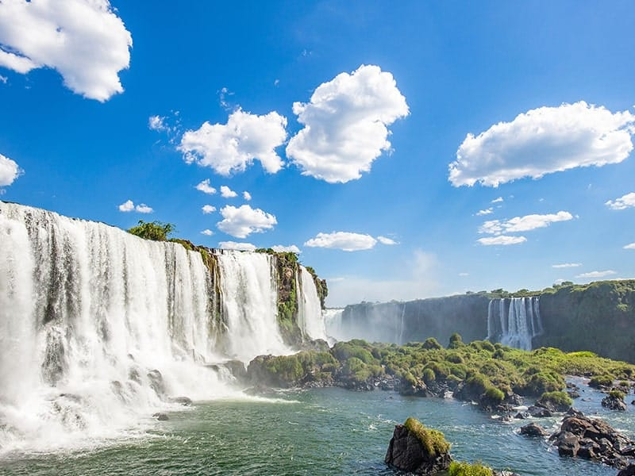

light on sensor, 2208 x 2944 px
Sobre Mim
Sou Omar, desenvolvedor FullStack apaixonado por criar aplicações que combinam funcionalidade e design. Com experiência em HTML, CSS, Python e JavaScript, trabalho para transformar ideias em projetos reais. Meu objetivo é unir tecnologia e criatividade para soluções inovadoras.
Sou apaixonado por arte, fotografia e design, sempre explorando maneiras criativas de expressar ideias. Adoro correr, praticando regularmente e participando de eventos esportivos, o que também reflete meu interesse por um estilo de vida ativo.
Tenho grande interesse por idiomas e sou poliglota, sempre buscando aprender novas línguas. No momento estou focado no japonês. Sou fascinado pela cultura japonesa, estudando a língua e me inspirando nos valores e tradições do Japão.
Sou entusiasta de Inteligência Artificial e uso frequentemente assistentes virtuais para me auxiliar em projetos, estudar e otimizar meu trabalho. Essa integração com IA me ajuda a resolver problemas, melhorar códigos e explorar novas ideias em design e programação. Quero ser reconhecido como um desenvolvedor e designer (Dev & Designer), unindo criatividade e tecnologia em cada projeto.
Projetos
Instagram da Acorrefoz: Cuido do perfil da Acorrefoz, criando conteúdo visual e gerenciando a
página.
Utilizo o Canva para elaborar designs impactantes que engajam e informam a comunidade de corredores.
Dê uma olhada
Fotografia no Behance: Minhas fotos estão disponíveis no Behance, onde compartilho imagens
capturadas com um olhar artístico e cuidadoso.
Veja minhas fotografias
Suite de Aplicações CLI: Desenvolvi ferramentas Python incluindo calculadora científica,
gerenciador de tarefas, tradutor multi-idiomas e jogos simples.
Acesse aqui
Artes para Amigos: Como hobby, realizo artes simples para amigos, incluindo desenhos, ilustrações, convites e montagens no Canva ou softwares de edição gráfica. É uma maneira de explorar minha criatividade e ajudar as pessoas ao meu redor, mesmo sem remuneração.
Habilidades
- Linguagens: Python (Django), Java, JavaScript, TypeScript
- Front-end: HTML5, CSS3, React (básico)
- Dados: SQL, NoSQL, Gremlin
- DevOps: Git, GitHub, Docker
- Metodologias: Scrum, Kanban
Habilidades de Design
- Ferramentas de Design: Canva, Adobe Photoshop (básico), Figma
- Fotografia: Edição e composição artística (Behance)
- Criação de Conteúdo: Design de postagens e material gráfico para redes sociais
- Artes Visuais: Desenhos e montagens simples como hobby
Contato
Me acompanhe


Onde Estou?
Estou localizado em Foz do Iguaçu,cidade famosa pelas incríveis Cataratas. 